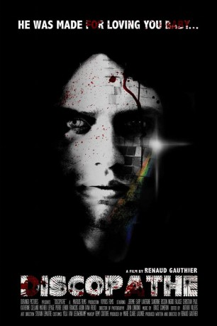
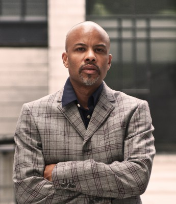

#8978 Discopath
 
 IMDB-Wertung: 5.0 / 10
IMDB-Wertung: 5.0 / 10  Metascore: 0
Metascore: 0 
Als Kind musste Duane hilflos mit ansehen, wie sein musikbegeisterter Vater beim Experimentieren im heimischen Tonstudio an einem Stromschlag dahinschied. Nun, als junger Erwachsener, befällt ihn, immer wenn er Musik hört, eine merkwürdige Unruhe und der Drang, junge Frauen zu töten. Nach dem er eine Dame ermordete, die ihn zum Besuch einer Disco verleitete, flieht er von New York nach Montreal, wo er den vakanten Job eines Hausmeisters in einem Mädcheninternat antritt. Schlecht nur, dass die Mädels gerne Musik hören.
Jahr: 2013
Dauer: 80 Minuten
FSK: 18
Land: Kanada Studio: Mad DimensionTonspuren: DTS - ,
Untertitel: Deutsch,
Auflösung: 1080p (1920x808) Größe: 6492 MB
Genre: Horror, Fantasy, Krimi
Regisseur: Renaud Gauthier
Drehbuch: Renaud Gauthier
Soundtrack: Bruce Cameron
Darsteller:
- Katherine Cleland als Valerie Lombardo
- François Aubin als Inspector Sirois
-  Christian Paul als Detective Willis
- Luca Asselin als Investigator MTL
- Rémy Couture als Policeman MTL
- Yola van Leeuwenkamp als Plane Stewardess
- Simon Lacroix als Priest
- Jean-François Garceau als Stressed passenger
- Jérémie Earp-Lavergne als Duane Lewis
- Sandrine Bisson als Francine Léveillée
- Ivan Freud als Paul Stevens
- Ingrid Falaise als Sister Mirielle Gervais
- Mathieu Lepage als Chartrand
- Pierre Lenoir als Father Antoine
- Catherine Antaki als Caroline Valois
- Sibylle Gauthier als Mélanie Champagne
- Chelsea Eaton-Lussier als Monica
- Nancy Blais als Michelle Prud'homme
- Benoit St-Hilaire als Pierre St-Aubin
- Nicolas Laliberté als Young Duane Lewis
- Jane-Anne Cormier als Counter Stewardess
- Marie-Claire Lalonde als Michelle's Mother
- Renaud Gauthier als Jack Lewis
- Davyd Tousignant als Sylvain Duplessis
- Salvador Valdez als Martin Lopez
- Monika Bagárová als Waitress
- Billy Thanos als Chef
- Allessandra Rigano als Discomania Dancer
- Jason Richardson als Policeman NYC
- Benjamin Lussier als Policeman MTL
- Mathieu Grimard als Policeman MTL
- Vincent Wilson als Policeman MTL
- Anthony Travaglini als Policeman MTL
- Amelie Paul als Plane Stewardess
- Louis-Philippe Sporns als Seventh Heaven Doorman
- René Durocel als Taxi Driver
- Francesca Gosselin Del Pozo als Mélanie's Mother
- Guy Blanchard als Mélanie's Father
- Thibault Bensa als Morgue Attendant
- Monika Bicarova als Waitress
- Catherine Castellucci als (uncredited)
Datei: X:\FSK18-2013\Discopath (2013, FSK18, 1920x808).mkv seit 16.05.2018
Festplatte: FSK18
 Es gibt insgesamt 26 Filme in der Gruppe 'FSK18-2013'
Es gibt insgesamt 26 Filme in der Gruppe 'FSK18-2013'